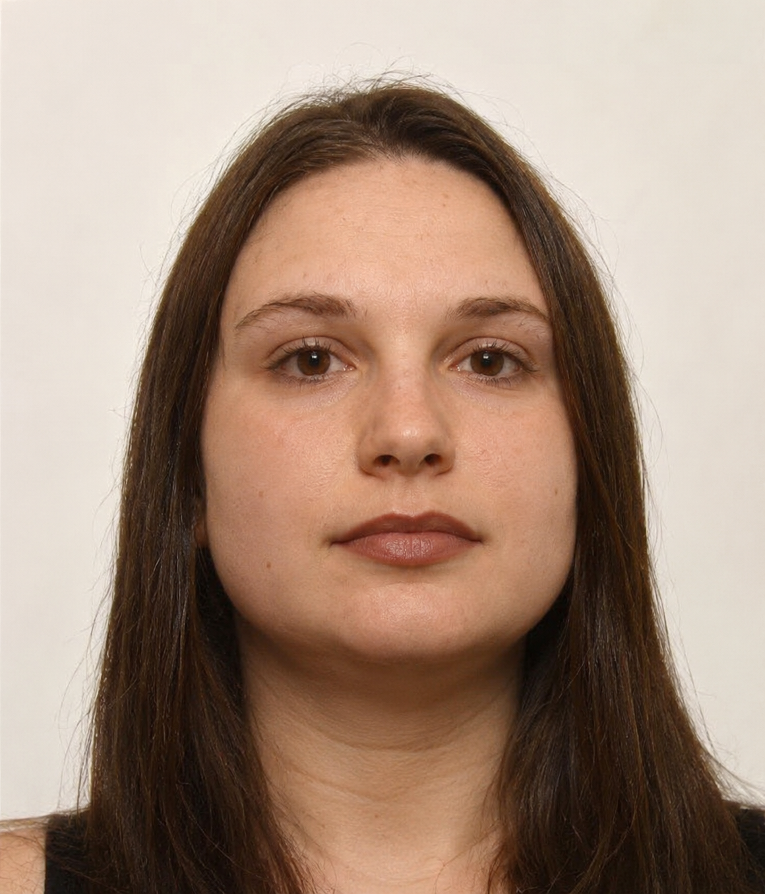

I design, build and maintain web applications that are fast, secure and easy to grow. From the database schema to the last pixel of the interface, I take ownership of the whole product and deliver software that businesses can rely on every single day.

I am a senior fullstack developer based in Kyiv, Ukraine, helping companies turn ideas into dependable, well-engineered digital products.
My work sits at the meeting point of engineering and product thinking. I enjoy understanding the real problem behind a feature request, finding the simplest solution that will hold up over time, and then implementing it end to end. Whether it is a customer-facing platform, an internal dashboard or a public API, I focus on software that is pleasant to use and just as pleasant to maintain.
On the frontend, I build responsive, accessible interfaces with modern JavaScript and TypeScript frameworks, paying close attention to performance, semantic markup and consistent design systems. On the backend, I design clean REST and GraphQL APIs, model relational and document databases, and write services that handle real traffic without surprises.
As a senior engineer, I also care about everything around the code. I set up automated testing and CI/CD pipelines, review pull requests with a constructive mindset, mentor less experienced developers and document decisions so that the whole team can move faster. I believe good software is the result of good habits repeated every day.
I work well both independently and inside larger teams, and I am comfortable talking to designers, product owners, stakeholders and fellow engineers alike. My goal on every project is simple: leave the codebase, the product and the team in a better place than I found them.
From the first architectural sketch to production monitoring, I can take responsibility for any layer of your application, or all of them at once.
Complete web applications built from scratch or extended from an existing codebase. I deliver features that are tested, documented and ready for real users, with a strong focus on stability and long-term maintainability.
Fast, responsive and accessible user interfaces built with React, Vue or Angular and TypeScript. I translate designs into clean components, reusable design systems and smooth experiences on every screen size.
Scalable server-side applications and well-structured REST or GraphQL APIs using Node.js, PHP or Python. Clear contracts, proper authentication, input validation and predictable error handling come as standard.
Thoughtful data modelling in PostgreSQL, MySQL, MongoDB and Redis. I design schemas that stay consistent as the product grows, optimise slow queries and plan safe migrations for live systems.
Containerised deployments with Docker, automated pipelines, infrastructure on AWS, Azure or Google Cloud, and monitoring that tells you about problems before your users do.
Independent audits of existing projects, performance and security reviews, refactoring plans and technical guidance for teams that want to raise the quality bar without slowing down delivery.
I do not believe in one perfect stack. I pick proven technologies that fit the product, the team and the budget, and I learn new ones quickly when the project needs it.
Modern, component-driven interfaces with a strong emphasis on performance, accessibility and clean state management.
Reliable services and APIs designed with clean architecture, clear boundaries and security in mind.
Data models that are consistent, well indexed and ready to scale with the business.
Automated, repeatable delivery that keeps releases boring in the best possible way.
Every project is different, but a transparent and structured approach keeps everyone aligned and makes results predictable.
We talk about your goals, users and constraints. I ask a lot of questions so that we build the right thing, not just the requested thing.
I propose an architecture, a technology stack and a realistic roadmap broken down into small, measurable milestones.
Iterative delivery with regular demos, automated tests and code reviews. You always know what is done and what comes next.
Smooth deployment, monitoring, documentation and ongoing improvements after release, so the product keeps getting better.
Over the course of my career I have grown from writing my first web pages to leading the technical side of complex, high-traffic applications.
Leading the design and development of complete web platforms, owning technical decisions and guiding teams through the full product lifecycle.
Delivering production features across the stack for business applications, e-commerce platforms and internal tools.
Building a solid foundation in web technologies, software engineering principles and teamwork.
Technical skill matters, but so does the way it is delivered. These are the principles I bring to every project.
I treat your product as if it were my own. I think ahead, point out risks early and take responsibility for the results, not just the tasks.
Clear estimates, regular updates and straight answers. If something is not going to work, you will hear it from me early, together with a better alternative.
Readable code, meaningful tests and sensible documentation are part of the job, not optional extras added at the end.
I keep your goals and budget in mind with every decision, choosing solutions that bring real value instead of unnecessary complexity.
A few answers to questions I often hear before starting a new collaboration.
Both. I am based in Kyiv, Ukraine, and I regularly work remotely with teams across Europe and beyond. For clients in and around Kyiv, on-site or hybrid collaboration is also possible.
Absolutely. I am comfortable getting up to speed in established codebases, understanding existing decisions and contributing quickly without disrupting the team's workflow.
Yes. I can take a project from an idea to a live product, covering architecture, frontend, backend, database design, deployment and ongoing maintenance.
Web applications, SaaS platforms, e-commerce solutions, dashboards, internal business tools, APIs and integrations. If it runs in a browser or powers something that does, I can most likely help.
Give me a call and tell me a little about your project. We will arrange a short conversation to discuss your needs, and I will follow up with a proposed approach and next steps.
Have a project in mind, need an experienced developer on your team, or simply want to talk about an idea? I would be happy to hear from you.
Senior Fullstack Web Developer, open to freelance projects, contracts and long-term collaboration.